Zero Jobs design system
The look of the ZERO Job Portal, taken apart and written down. Every value here was measured on the live build (v82), so anything you make with it looks, reads and moves like the portal.
Four portal screens rebuilt from these parts match the real ones to within 0.02% of pixels, and 125 parts match property by property.
Use it
Two files and one class. Start from the starter page or from one of the rebuilt screens, never from a blank file.
<link rel="stylesheet" href="zero-jobs.css"> <script src="https://unpkg.com/lucide@0.469.0/dist/umd/lucide.min.js"></script> <script src="zero-jobs.js"></script> <body class="zj"> <!-- build with zj- classes. Icons: <i data-lucide="check"></i>, then zj.icons() --> </body>
For a person
Read this page top to bottom once. Copy a rebuilt screen that is closest to what you are making and change the content.
For an AI
Hand it DESIGN.md. Every value, rule and banned move is in plain text, with the class to use for each part.
For a developer
zero-jobs.css is the source of truth. Tokens sit on :root as --zj-*, components are zj- classes, nothing leaks into a host app.
Laws
The few rules that make it feel like the portal. Break one and it stops feeling like Zero.
Colour only when it means somethingThe page is white and grey. Green means verified, amber means it needs you, red means due, lime means now. Nothing is colourful for decoration.
Three sizes, two weights12 for meta, 14 to read, 16 for titles and for Zero. 400 to read, 500 for names and titles. Nothing bold, nothing italic.
One key per viewThe black key is the thing you came to do. Everything else is a white button, a ghost or a quiet link.
Words, not scoresFit is Strong fit or Good fit, with the reasons on hover. Never a percentage.
A face beside every person, a logo beside every companyReal company logos, generated faces. Never initials when a face exists.
Zero sits beside the workA green orb with two white eyes. The body stays still, only the eyes move. It never covers the page.
Every action says what happens nextSent. Airtable has it. Then the next step and the date to expect a reply.
Nothing flickersRedraws patch the page. Arrivals rise 8px. Presses go down 1px. Nothing bounces.
Proof
Each screen below was rebuilt only from the kit, then screenshotted next to the real v82 at 1512 by 860 and compared pixel by pixel. Drag across a screen to compare.
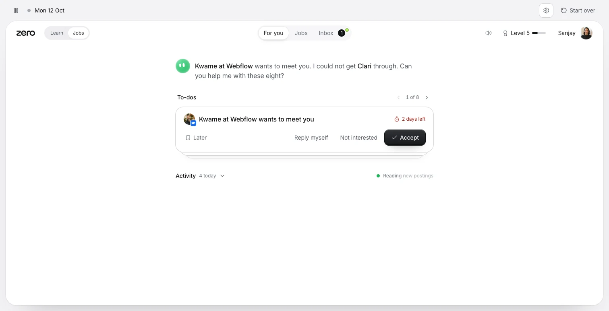
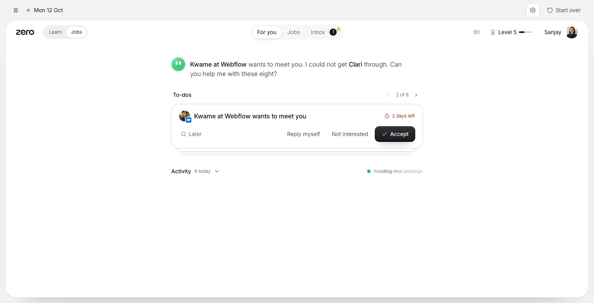
v82Kit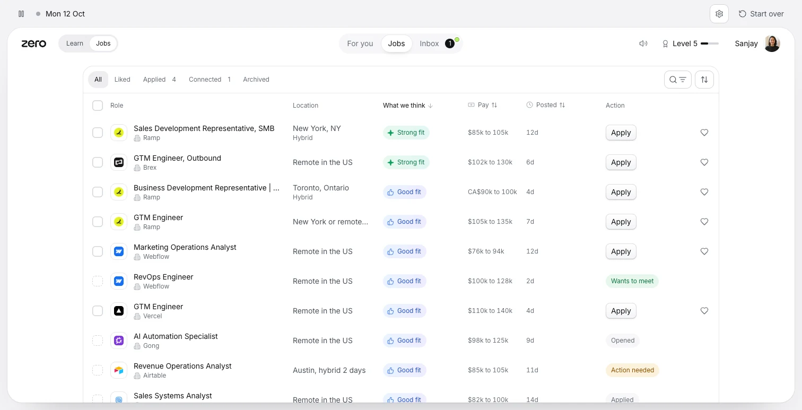
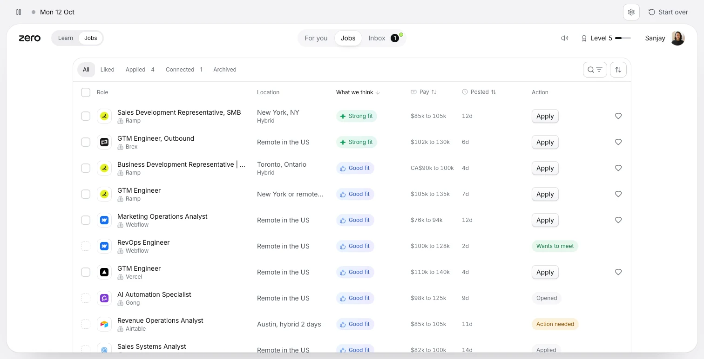
v82Kit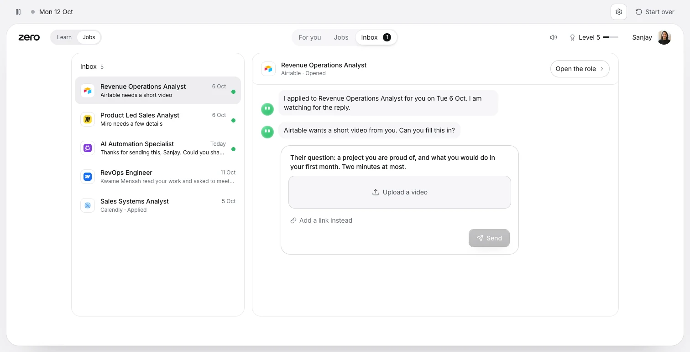
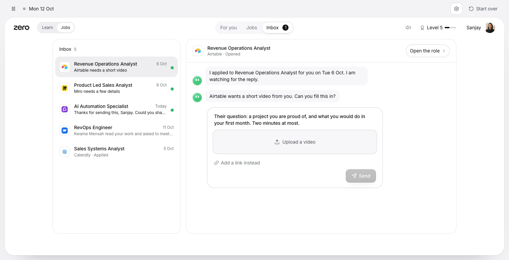
v82Kit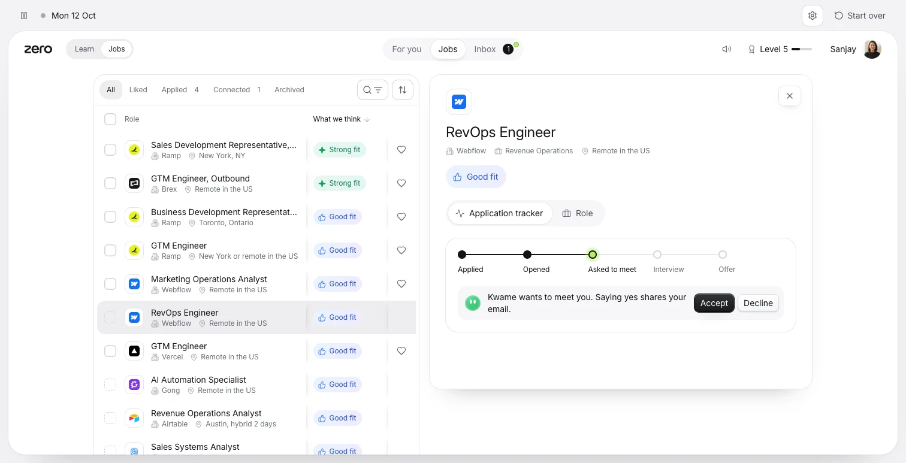
v82KitColour
A cool grey canvas, a white sheet, one ink ramp. Meaning colours are small and rare.
Surfaces
Ink
Meaning
Why it fits
Strong fit#E8F8EF to #E3F6F5 · text #0F7A47 · icon #12A05C
Good fit#EAF3FF to #EEECFF · text #2851C8 · icon #3E7BF5
Low fitwell2 · text ink3
Type
Inter, from Google Fonts with optical sizing on. Stylistic sets cv11 and ss01 switched on for the whole page, letter-spacing -0.006em. Money, dates and counts use tabular figures.
28 / 34 400 · -0.022em
.zj-t28 · page title, rareYour next role is waiting
.zj-t28 · page title, rareYour next role is waiting
24 / 30 400 · -0.01em
.zj-t24 · a role in its panelRevOps Engineer
.zj-t24 · a role in its panelRevOps Engineer
16 / 24 500
card titles, section headsKwame at Webflow wants to meet you
card titles, section headsKwame at Webflow wants to meet you
16 / 24 400
Zero speaks at this sizeKwame at Webflow wants to meet you. I could not get Clari through.
Zero speaks at this sizeKwame at Webflow wants to meet you. I could not get Clari through.
14 / 20 400 and 500
everything you readI applied to Revenue Operations Analyst for you on Tue 6 Oct. I am watching for the reply.
everything you readI applied to Revenue Operations Analyst for you on Tue 6 Oct. I am watching for the reply.
12 / 16 400
.zj-m · meta, times, labelsAirtable · Opened · Reply by Tue 13 Oct · $85k to 105k · 12d
.zj-m · meta, times, labelsAirtable · Opened · Reply by Tue 13 Oct · $85k to 105k · 12d
Radius and depth
One radius scale, nested so inner corners sit inside outer ones. Depth comes from hairlines and long soft shadows, never from glow.
Spacing
Space separates, never lines. These are the gaps the portal uses, and where.
| Gap | Where |
|---|---|
| 2 | Between tabs in a track, between rows in a list |
| 4 | Inside a role tab track, between a card body and its foot |
| 6 | Icon to label in buttons, buttons in a card foot |
| 8 | Tracks in the top bar, popover rows, dialog actions |
| 10 | Face to title in a card, orb to bubble, section head to content |
| 12 | Logo to title in a row, orb to Zero's words, card padding rows |
| 14 | Between chat messages, panel head rows |
| 16 | Card padding, between list and thread, between table and panel |
| 20 | Panel padding, tracker to note, top bar gap |
| 24 to 32 | Sheet edges: top bar 24, body 32, For you column 32 on top |
Motion
Fast and quiet. Hover and press take 120ms. Arrivals rise 8px. The only thing that keeps moving is Zero's eyes and a running task.
| What | How long | Curve | Move |
|---|---|---|---|
| Hover, press, select | 120ms | --zj-e | Colour and fill. Press moves down 1px |
| Quiet buttons | 150ms | ease | Fill and colour |
| Why it fits popover | 140ms | ease-out | Drops 4px into place |
| Dialog scrim | 160ms | ease-out | Fades in |
| Chevrons | 200ms | --zj-out | Turn 180 degrees |
| A running task appears | 250ms | --zj-spring | Rises 4px |
| A page | 280ms | --zj-e | Rises 8px |
| A card | 400ms | --zj-out | Rises 8px |
| Zero's eyes look | 450ms | --zj-out | Move up to 15px, tilt up to 9 degrees |
| Zero blinks | 5.2s loop | ease-in-out | Twice per loop |
| A toast | 4.2s | --zj-e | Rises 10px, holds, leaves |
Icons
Lucide 0.469.0. 16px with a 1.75 stroke by default. Inside small parts they step down: 15 in role tabs, 14 in quiet buttons and deadlines, 13 in meta lines and pills, 12 in counts.
Shell
A grey canvas, a slim strip for prototype controls, then the white sheet with a 60px top bar: wordmark and mode on the left, the main tabs centred, sound, level and you on the right.
Mon 12 Oct
- Strip
- 52px · padding 0 22 · prototype controls only, never product
- Sheet
- white · radius 28 · inset 14 from the canvas · --zj-sh-sheet
- Top bar
- 60px · padding 0 24 · three columns, tabs centred
- Body
- padding 8 32 112 · pages 1200 wide at most · For you column 688
Buttons
A machined black key, a white second choice with an edge, and quieter ways down from there. Radius 10, or full round when the rounded option is on.
Rounded option
- .zj-key
- The one thing to do. 36 high, 38 and 500 in a card foot
- .zj-sec
- The second choice. White, machined edge
- .zj-sm
- 30 high, radius 8. Inside rows and notes
- .zj-ghost
- A third choice. No box until you point
- .zj-quiet
- A side door. 32 high, ink3, 14px icon
- .zj-pillbtn
- Go somewhere. 38 high, round, ring darkens on hover
- Icon buttons
- .zj-ib toolbars · .zj-round 32 in the top bar · .zj-tool 36 in the strip
- Close and cancel
- .zj-close floats on a panel · .zj-cancel stops one task, red on hover · .zj-big 38 beside a key
- States
- Disabled at 40% (30% inside a card) · .zj-like, .zj-on fills it
Pills and signals
Small, rounded, 26 high. Words first, colour second.
Strong fitGood fitLow fit
- .zj-fit
- Why it fits, in words. Hover shows the reasons. .zj-big is 38 high in a role panel
AppliedOpenedWants to meetAction neededLevel 6
- .zj-status
- Where an application stands. Green only when the company said yes
4 days left2 days left
- .zj-due
- A deadline. Red text and a stopwatch, no box, never bold. .zj-soon at two days or less
2 sent1
- Counts and dots
- .zj-sent · .zj-count on a tab · .zj-dot, .zj-go pulses · .zj-unread on a thread
- .zj-run
- A task Zero is running. A live green dot and a slow sheen on the words
Applying to Ramp
- .zj-spin
- 11px, only beside a task that is working right now
People and companies
Real logos from the company's own site, at sz=128, inside a white tile. Generated faces in circles. A person at a company gets the logo as a badge.
- .zj-lg
- 44 (.zj-l) panel · 32 rows · 24 round (.zj-xs) timeline · 20 round (.zj-xxs) stacks
- .zj-lgs
- Several companies at once. Overlap 7, ring in the canvas colour

- .zj-av, .zj-face
- 32 or 28 faces · a face at a company carries a 14px logo badge
Zero
Zero is a green orb with two white pill eyes. The body never moves. The eyes blink, look toward what matters and change shape with the mood. Zero talks in first person, at 16.
Kwame at Webflow wants to meet you. I could not get Clari through. Can you help me with these eight?
- .zj-say
- Zero opens a page. Orb 36, words at 16, names in 500
Kwame wants to meet you. Saying yes shares your email.
- .zj-note
- Zero inside a card. Well, radius 14, orb 26. .zj-warn for amber
Airtable wants a short video from you. Can you fill this in?
On it, sending tonight.
- .zj-msg
- Chat bubbles. Zero in well with the orb at the bottom, you in ink on the right
zj.orb(36) // idle, blinks
zj.orb(28, 'idle', {still:true}) // in lists, no blink
zj.orb(44, 'think') // eyes drift, thinking
zj.orb(44, 'work') // eyes scan, working
zj.orb(36, 'idle', {look:[.8,.3]}) // look right and downCards
A card is one decision. White, radius 20, a hairline ring. The next two to-dos peek under the front one.
To-dos
1 of 8Their question: a project you are proud of, and what you would do in your first month. Two minutes at most.
- .zj-card
- padding 16 · gap 12 · rises 8px in 400ms
- .zj-card-title
- 16/24 500, a face or logo first, the deadline pushed right
- .zj-card-foot
- a quiet side door on the left, choices on the right, the key last
- .zj-stack
- back cards at scale .965 and .93, 8 and 15 down
Activity
What Zero did, newest first, grouped by day. A thin line threads the icons. Anything running sits under Now with a way to cancel it.
Now
Reading new postingsScoring 732 postings against your context
Today
Tue 6 Oct
Table
One table, many rows of the same thing. A toolbar of filters on top, quiet headers, rows that fill on hover. The role, the place, what we think, pay, age and one action.
| Role | Location | Action | Like | |||
|---|---|---|---|---|---|---|
Sales Development Representative, SMB | New York, NYHybrid | Strong fit | $85k to 105k | 12d | ||
RevOps Engineer | Remote in the US | Good fit | $100k to 128k | 2d | Wants to meet | |
Revenue Operations Analyst | Austin, hybrid 2 days | Good fit | $85k to 105k | 11d | Action needed | |
GTM Engineer | Remote in the US | Good fit | $120k to 150k | 3d | Level 6 |
- Rows
- 56 high · padding 10 12 · hover fills well, an open row fills well2 · a locked row sits at 55%
- Columns
- Role takes the rest · Location 170 · What we think 160 · Pay 110 · Posted 150 · Action 176 · Like 44
- Beside a panel
- .zj-narrow: no Location column, the place moves under the company, the role and heart stay put while it scrolls sideways
Inbox
A thread per role. The list on the left, the conversation on the right, Zero's asks arrive as cards inside the thread.
Inbox
3Revenue Operations Analyst
Airtable · Opened
I applied to Revenue Operations Analyst for you on Tue 6 Oct. I am watching for the reply.
Sent. Airtable has it.
What happens next: Airtable reviews it with the hiring team. Expect a reply by Tue 13 Oct.
A role, opened
Opens beside the table at 640 wide. The role's name at 24, the facts in one meta line, the fit, then the tracker with Zero's note on what to do now.
Files
What Zero sent, as a small tree under the activity row. Each file can be seen and downloaded.
Sanjay_Chauhan_Resume.pdfResume
Portfolio, tailored for AirtablePortfolio
Cover noteNote
Popover, toast, dialog
Things that sit over the page. The popover explains, the toast confirms, the dialog asks one question.
Why it is a strong fit
- PlaceNew York, one of your places
- Pay$85k to $105k, above your $95k floor
- Skills3 of 3 things they need most
- .zj-pop
- On hover or focus of a fit pill, arrow on the pill's start. A gap row (.zj-gap) shows in amber. Try the pills in Table
Saved to Liked
- .zj-toast
- White, 44 high, one line, one action. zj.toast(text, {icon, action}). Leaves after 4.2s
Add your resume so I can apply
Resume
I send it with every application
Voice
Zero is a smart friend who is also your coach. It says what happened, why, and what happens next. Plain verbs, real dates, no hype.
Say what happened and why
Clari did not go through. Greenhouse timed out, so nothing was sent.
An empty status
Something went wrong. Please try again.
Always the next step
Sent. Airtable has it. What happens next: they review it with the hiring team. Expect a reply by Tue 13 Oct.
Leaving them guessing
Your application has been submitted successfully!
Offer help they choose
That role opens at Level 6. I can tell you the day it does.
A parental nudge
Go to Learn to unlock more roles.
Short, real verbs on buttons
Accept · Apply · Send · Later · Not interested · Reply myself · Open the role
Process words
Proceed to application submission
| Write it like this | Example |
|---|---|
| Dates | Tue 13 Oct · Mon 12 Oct · Today · Yesterday |
| Money | $85k to 105k · CA$90k to 100k · ranges say "to", never a dash |
| Age of a posting | 12d |
| Deadlines | 4 days left · 2 days left |
| Zero | First person: "I applied to Gong for you on Tue 6 Oct. I am watching for the reply." |
| Reasons | Asked only when you say no. Apply and Accept act at once |
| Never | Dashes as pauses. Leverage, robust, seamless, elevate, unlock, empower, journey, transform. Exclamation marks |
Moments
Levelling up and getting hired are the two moments the calm page steps aside for. Full screen, a gradient sky, the real badge, tap to continue. These are screenshots of the portal. The celebration engine lives in the portal's own source (st25.js) and is not part of this kit yet.
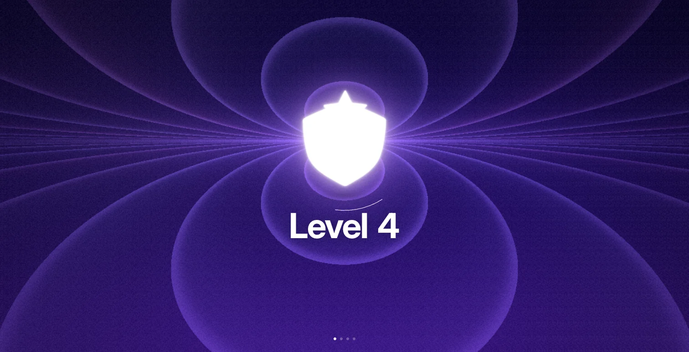
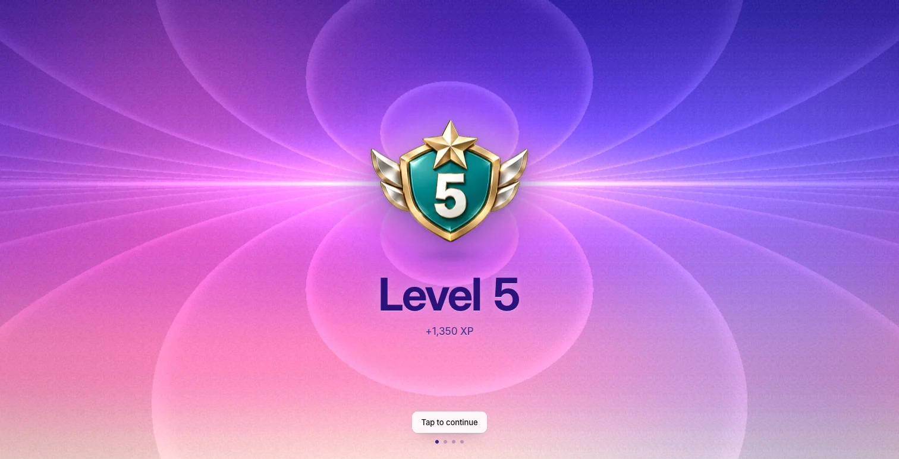
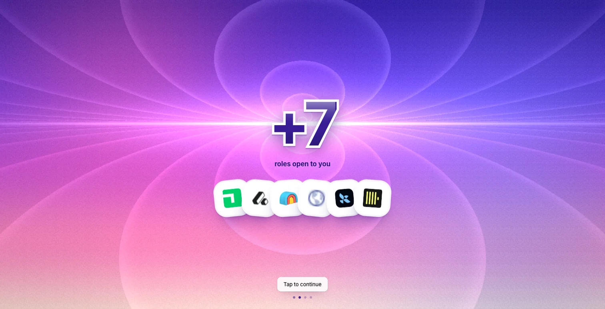
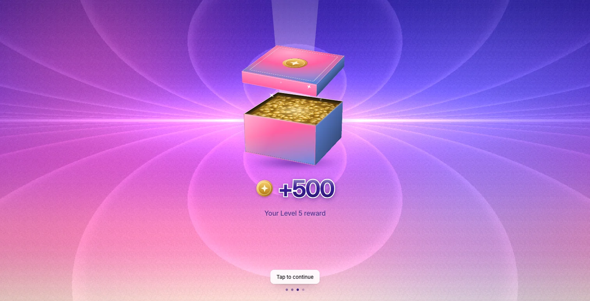
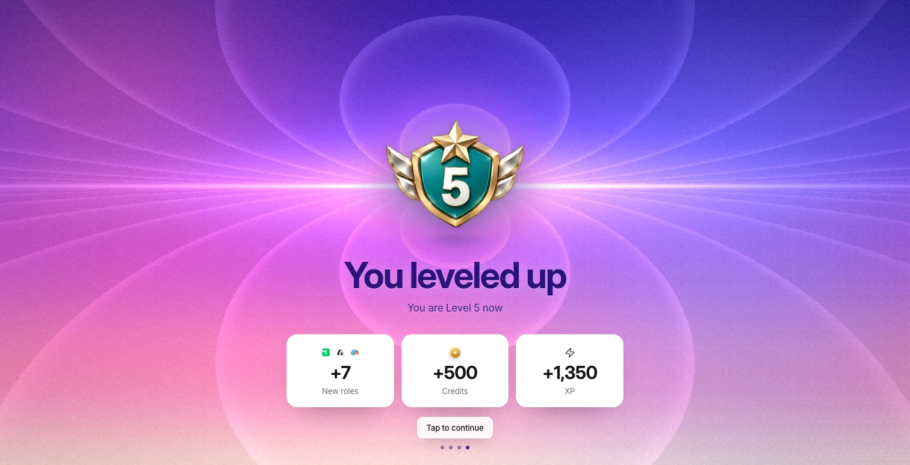
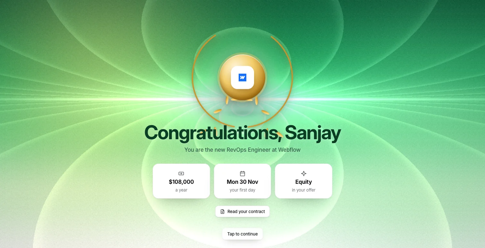
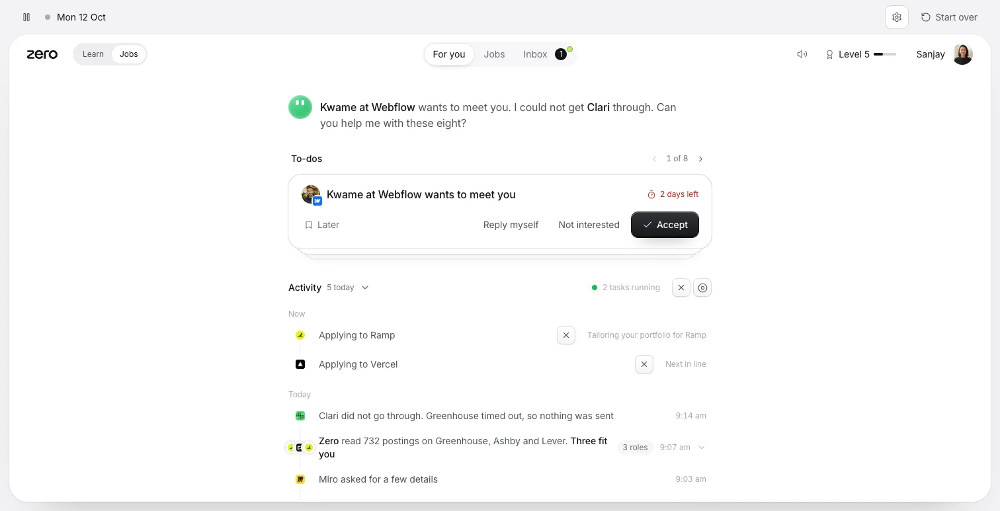
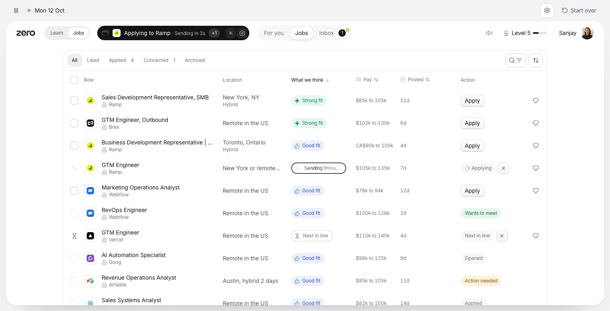
The kit
Everything here, in one download.
DESIGN.mdEvery rule and value in plain text. Give it to an AI first
zero-jobs.cssTokens and every component, zj- prefixed
zero-jobs.jsZero's orb, logos, faces, toast, popover, dates, pay
starter.htmlThe shell, ready for the next screen
screens/For you, Jobs, Inbox and an opened role, rebuilt
Download the kitAll of it, with the tests that check it against v82
Measured on ZERO Job Portal v82 at 1512 by 860Zero Jobs design system v1 · build 1Inter by Rasmus Andersson, OFL · Lucide icons, ISC